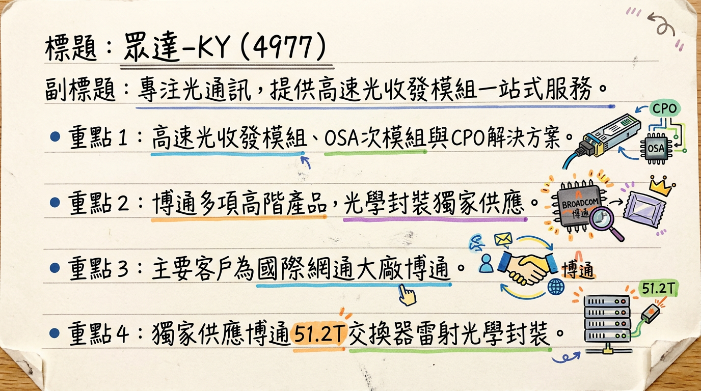
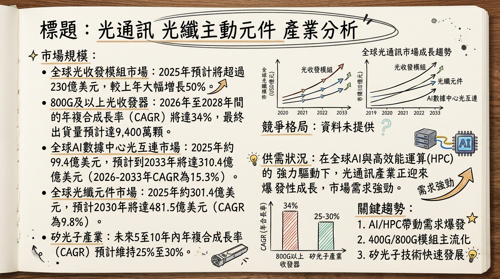
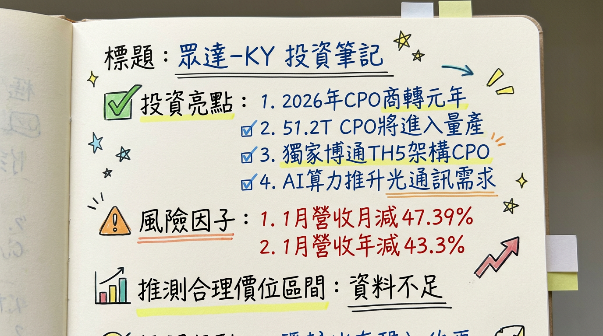

4977 眾達-KY 深度研究報告
一句話摘要
眾達-KY (4977) 為高速光收發模組及光學代工廠，獨家供應國際網通大廠博通 (Broadcom) 51.2T CPO交換器中的雷射光學封裝。受惠於AI資料中心對高頻寬、低功耗的CPO與1.6T光模組的強勁需求，預計2026年起CPO及ELSFP將進入大規模量產階段，搭配儲存網業務穩定成長，驅動營運迎來爆發性成長動能。
公司概覽
眾達-KY 主要從事高速光收發模組的設計、研發、製造及銷售，被市場定位為「光學代工廠」，提供從上游雷射與光偵測器封裝、光收發次模組 (OSA) 製造到完整光收發模組的一站式服務。
核心產品包含：
- 高速光收發模組： 如SFP+ (10-32G)、QSFP (40-400G)、OSFP等可插拔光收發器。
- 光收發次模組 (OSA)： 將雷射、光電偵測器及鏡頭等關鍵元件封裝在一起的子模組。
- 光電零組件及代工服務： 提供光電封裝、測試及設計服務。
- 共同封裝光學 (Co-Packaged Optics, CPO) 解決方案： 為博通51.2T全光交換器中的雷射光學封裝獨家供應商。
- 外部雷射光源模組 (External Laser Source Module, ELSFP/ELS)： 配合CPO應用開發。
- 儲存區域網路 (Storage Area Network) 光纖通道 (Fiber Channel) 產品： 64G已量產，128G開發中。
- 1.6T光模組： 預計最快於2026年第一季放量出貨。
營收結構：
目前公開資訊中未明確揭露各業務具體的營收百分比，但高速光收發模組佔公司營收比重最高。
| 業務類別 | 營收佔比 (約略) |
|---|
| 高速光收發模組 | 最高比重 |
| 光收發次模組(OSA) | 未揭露 |
| 光電零組件及代工 | 未揭露 |
| CPO解決方案 | 潛在成長動能 |
| ELSFP/ELS | 潛在成長動能 |
| 儲存網光纖通道 | 穩定貢獻 |
| 1.6T光模組 | 新興成長動能 |
眾達-KY 製造基地設於中國蘇州及馬來西亞檳城。為因應美中貿易戰，自2019年起於馬來西亞檳城設立新廠，目前採取「雙工廠策略」，兩廠產能與產品均相當，各自約佔營收的50%。
核心競爭優勢
CPO/ELSFP 技術領先與獨家供應優勢： 眾達-KY 為博通 (Broadcom) 多項高階產品的獨家供應商，特別是博通51.2T全光交換器中雷射光學封裝的獨家夥伴。此關鍵合作使其在AI資料中心推動的CPO浪潮中佔據有利地位，ELSFP產品已進入驗證尾聲，預計2026年放量。
一站式「光學代工廠」服務： 公司提供從光電元件封裝、OSA次模組到完整光收發模組的垂直整合服務能力，能更有效掌握產品開發與品質，並與客戶建立更緊密的合作關係。
產品線廣泛且持續升級： 產品涵蓋從10G至400G高速光模組，並積極開發800G、1.6T及CPO等新世代產品，能滿足資料中心及電信市場不斷升級的需求。儲存區域網路產品線64G已量產，128G開發中，提供穩定營收基礎。
國際級客戶合作夥伴： 與美國博通長期合作關係穩固，產品銷售至北美超大型資料中心營運商、網通系統商，以及日本、韓國、台灣之電信營運商，顯示其在國際市場的競爭力。
雙工廠彈性產能佈局： 中國蘇州與馬來西亞檳城雙工廠策略，確保公司能彈性因應地緣政治風險與客戶產能需求，提高供應鏈韌性。
財務分析
月營收趨勢
| 月份 | 金額 (新台幣 百萬元) | 月增率 (MoM) | 年增率 (YoY) |
|---|
| 2026年01月 | 32.81 | -47.38% | -43.3% |
| 2025年12月 | 62.35 | -38.14% | -40.5% |
| 2025年11月 | 100.81 | +14.38% | -30.37% |
| 2025年10月 | 88.13 | -14.15% | -38.47% |
| 2025年09月 | 102.66 | +1.78% | -25.62% |
| 2025年08月 | 100.86 | +31.7% | -26.91% |
近期月營收仍處於歷史低檔，顯示公司正處於新舊產品交替期，營收動能仍有壓力。2026年1月營收為新台幣3,280.5萬元，月減47.39%，年減43.3%。
季度數據
| 項目 | 2025年第三季 |
|---|
| 季營收 | 新台幣 2.801 億元 |
| 毛利率 | 27.06% |
| 營業利益率 | 11.9% |
| EPS | 新台幣 1.02 元 |
公司於2024年第三季成功轉虧為盈，2025年第三季單季營收較上季成長75.4%，年增54.8%，顯示營運回溫。毛利率與營業利益率相較前幾季有所改善。
年度趨勢
| 年度 | 全年度營收 (新台幣) | 全年度 EPS (新台幣) | 備註 |
|---|
| 2024 | 10.918 億元 | 1.24 元 | 實際 |
| 2025 | 10.75 億元 | 3.53 元 (累計前三季) | 實際，未找到全年度預估 |
2025年累計前三季EPS已達3.53元，超越2024年全年度水準，顯示盈利能力有所恢復。
法說會重點 (2025年12月09日)
AI與CPO為核心驅動力： 管理層強調AI推動高效能運算需求強勁，全球超大型資料中心大量建置，已從2024年初的1,000座突破，預計未來四年將再翻倍至超過2,000座，直接驅動CPO需求。
CPO產品進度與量產時程： 眾達-KY與博通 (Broadcom) 合作開發CPO技術，預期2025年將通過客戶認證，並於2026年正式進入大規模量產階段，並預期在2026或2027年達到顯著出貨。公司為博通51.2T全光交換器中雷射光學封裝的獨家供應商。
ELSFP產品進度： ELSFP產品已進入產品驗證尾聲，預計在2025年第四季至2026年第一季取得客戶認證並開始小量生產，2027年將進一步放量。
1.6T光模組： 新的1.6T光模組預計最快在2026年第一季底放量出貨，成為公司業績成長的新引擎。
產能佈局與資本支出： 公司採取蘇州與馬來西亞檳城雙工廠策略，兩廠產能均能生產所有量產產品，且產能相當，將配合美國政府政策與客戶需求調整產能。2025年的配息將考量蘇州和檳城廠的資本支出後決定，並預期將優於2024年水準。
CPO功耗優勢： CPO架構相較可插拔模組可降低約65%系統功耗，相較LPO也具備約35%節能效果，此功耗優勢對大型資料中心具高度吸引力。
儲存區域網路業務： 64G產品已進入量產，128G產品正在開發中，持續配合博通旗下Brocade、Emulex等公司的儲存交換器進行銷售，前景穩定。
券商觀點
截至本報告發布日（2026年03月06日），未找到明確且具體的2025-2026年券商目標價與EPS預估資料。
| 券商名稱 | 目標價 (新台幣) | 評等 | 日期 (公布日) | 備註 |
|---|
| N/A | N/A | N/A | N/A | 無具體券商報告 |
| N/A | N/A | N/A | N/A | |
| N/A | N/A | N/A | N/A | |
雖有媒體報導法人看好眾達-KY業績成長可期，但目前無明確的具體券商目標價可供參考。
財報深度分析
利潤率趨勢
| 季度 | 毛利率 | 營業利益率 | 稅後淨利率 | 備註 |
|---|
| 2025Q3 | 27.06% | 11.90% | 28.69% | |
| 2025Q2 | 23.18% | 4.22% | 111.23% | 稅後淨利率異常高，可能需進一步查證原始財報 |
| 2025Q1 | 23.72% | 4.44% | -37.50% | |
| 2024Q4 | 27.66% | 16.11% | 41.70% | |
| 2024Q3 | 27.30% | 13.00% | 24.93% | 季淨利新台幣8,900萬元 / 營收新台幣3.58億元 |
公司於2024年12月的法說會指出，2024年第三季毛利率達27.3%，較上季增加13個百分點，較去年同期增加9.72個百分點；營業利益率達13%，較上季增加29.8個百分點，較去年同期提升18.4個百分點。這主要反映公司成功完成庫存調整，並專注於高階產品的技術升級，使獲利能力顯著改善。未來CPO產品的放量，有望進一步提升公司利潤率。
存貨與營運
| 季度 | 存貨週轉天數 | 應收帳款週轉天數 |
|---|
| 2025Q3 | 77.45 天 | 40.64 天 |
| 2025Q2 | 75.23 天 | 36.51 天 |
| 2025Q1 | 69.43 天 | 44.28 天 |
| 2024Q4 | 62.16 天 | 24.94 天 |
2024Q4到2025Q3存貨週轉天數呈現上升趨勢，應收帳款週轉天數則在2024Q4較低，2025Q1提高後在2025Q2下降，2025Q3略微上升。公司曾在2024年12月法說會表示已成功完成庫存調整，但後續存貨週轉天數的增加可能反映新產品備料或市場需求波動，需持續觀察。
資本支出
未找到近3年具體的資本支出金額。然而，公司自2019年起在馬來西亞檳城設立新廠，目前採取中國蘇州及馬來西亞檳城雙工廠策略，確保產能彈性。管理層在2025年12月法說會指出，CPO相關產品將在2026或2027年進入大規模量產，未來ELSFP產品產能將依客戶預估需求規劃，且2025年現金股利將考量蘇州與檳城廠的資本支出後發放，暗示公司持續有資本支出投入以支持未來成長動能。
其他財務指標
- 負債比率： 從2024Q1的33.48%逐步下降至2025Q3的18.80%，顯示財務結構持續改善，更趨穩健。
- 自由現金流量： 2025Q3為-565,805仟元 (單位推估)，過去幾季呈現波動。在高速成長期，資本支出與營運資金需求增加可能導致自由現金流短期為負，需觀察長期趨勢。
- 業外收支： 業外收支對稅前淨利的影響在2025年前三季佔比較高 (Q3: 62.91%, Q2: 96.28%, Q1: 112.09%)，主要來自存款利息、金融商品投資配息、外幣評價損益及金融商品評價損益。需留意業外損益的波動性對公司盈餘的影響。
股權異動
- 董監事/大股東申報轉讓： 未找到2024-2026年的最新董監事/大股東申報轉讓紀錄。
- 庫藏股： 眾達-KY於2024年12月19日董事會決議買回2,500張股票轉讓予員工，預計以每股100至200元區間執行，買回期間至2025年2月19日止。此次買回股份約佔已發行股份總數的3.12%。截至2025年2月18日，公司實際買回142.5萬股，總金額1億8,434萬3,299元，平均每股買回價格為129.36元，本次庫藏股未執行完畢。
- 可轉債/增減資： 未找到2024-2026年的最新發行可轉換公司債或增減資計畫。
- 股利政策：
*
2025年股利 (所屬年度2024)： 現金股利
2.253元。
* 2024年股利 (所屬年度2023)： 現金股利 2.2元。
公司在2025年12月法說會預期，2025年的現金股利將優於2024年的水準，顯示管理層對未來營運展望樂觀。
產業分析
市場規模與成長率
光通訊產業在全球AI與高效能運算(HPC)的強力驅動下，正迎來爆發性成長。
- 全球光收發模組市場： 預計2025年將超過230億美元，較2024年大幅增長50%。
- 400G與800G模組： 2024年出貨量預計突破2,000萬顆，市場規模超過90億美元，預估於2026年達到近120億美元。
- 800G及以上光收發器： 美系外資預計2026年至2028年間年複合成長率（CAGR）將達34%，最終達到9,400萬顆。
- AI數據中心光互連市場： DataM Intelligence報告指出，2025年達到99.4億美元，預計到2033年將達到310.4億美元，2026-2033年複合年增長率（CAGR）為15.3%。
- 全球光纖元件市場： 預計將從2025年的301.4億美元成長到2026年的330.9億美元，複合年成長率達9.8%。2030年市場規模將達到481.5億美元。
- 矽光子產業： 未來5至10年內年複合成長率（CAGR）預計將維持25%至30%的高速成長。
供需狀況：
2025年算力市場是光通信產業爆發的核心驅動力。
- 800G模組需求： 2025年初預估約2,000萬顆，後期已上調至3,000萬顆。2026年預估需求約4,500萬顆，其中NVIDIA GPU配套約2,000萬顆，ASIC增量2,000萬顆。
- 1.6T模組需求： 2025年初預估500萬顆，後期已上調至600-700萬顆。2026年需求量預計突破2,000萬組。
- 總體趨勢： 2025年至2026年進入800G光收發模組放量期，2026年整體成長動能呈現倍數成長。2026年光模塊產值預計衝上166.97億美元 (年增29%)，其中800G將正式取代400G成為主流(佔比43%)。
產業平均毛利率水準
- 光聖(6442)： 2025年第二季毛利率達61.67% (歷史新高)，上半年平均56.53%。
- 達發(6526)： 2025年第四季毛利率為53.6%，全年毛利率51.9%。光通訊業務毛利率優於公司平均。
- 納真科技： 2025年整體毛利率回升至20.0%，其中數通光模組毛利率從2023年的28.9%降至2025年的24.4%。
競爭格局
全球主要光模組廠商市佔率 (2024年)
| 公司名稱 | 2024年全球光模組收入市佔率 | 備註 |
|---|
| 納真科技 | 2.9% | 全球專業光模組廠商中排名第五 |
| Coherent (COHR) | 未揭露 | 800G/1.6T光模組及核心雷射晶片領導者 |
| Lumentum (LITE) | 未揭露 | 高速EML雷射晶片市場高市佔率 |
| 其他主要廠商 | 未揭露 | 中際旭創、新易盛、華工正源、光迅科技、聯特科技等 |
全球光通訊模組市場競爭激烈，中國廠商佔有重要地位，美國廠商如Coherent和Lumentum在高階光模組和雷射晶片領域具領先地位。
眾達-KY vs 主要競爭對手比較
| 項目 | 眾達-KY | 主要競爭對手 (Coherent, Lumentum, 中際旭創等) |
|---|
| 技術 | 博通51.2T CPO雷射光學封裝獨家供應商；CPO/ELSFP技術領先；具備光學代工能力。 | 高速EML雷射晶片、矽光子整合、完整光模組方案。 |
| 產能 | 中國蘇州與馬來西亞檳城雙工廠策略。 | 多數廠商擁有多個生產基地，部分中國廠商產能大。 |
| 客戶 | 博通；北美超大型資料中心營運商；網通系統商；日韓台電信營運商。 | 大型雲端服務提供商 (CSP)、電信營運商、設備商。 |
| 產品 | 高速光收發模組 (10G-400G, 1.6T)、CPO、ELSFP、OSA、儲存網光纖通道。 | 高速光模組 (400G/800G/1.6T)、矽光子元件、雷射晶片。 |
| 價格 | 未有具體公開數據，但CPO等高階產品ASP較高。 | 各家產品價格策略不一，高階產品具高單價優勢。 |
| 公司名稱 | 2025年Q3營收 (新台幣) | 2025年Q3毛利率 | 2025年Q3 EPS (新台幣) | 2025年前三季EPS (新台幣) | 2026年1月營收 (新台幣) |
|---|
| 眾達-KY (4977) | 2.801 億元 | 27.06% | 1.02 元 | 3.53 元 | 3,280.5 萬元 |
| 光聖 (6442) | 29.09億元 (Q2 2025) | 61.67% (Q2 2025) | 2.59元 (Q2 2025) | 未找到最新資料 | 未找到最新資料 |
| 達發 (6526) | 45.5億元 (Q4 2025) | 53.6% (Q4 2025) | 3.32元 (Q4 2025) | 17.32元 (全年2025) | 未找到最新資料 |
產業趨勢
高速傳輸模組升級 (800G, 1.6T, 3.2T)：
* 趨勢： AI與HPC爆發式成長，數據中心對高頻寬互連需求暴增。800G模組2025年將成主流，1.6T與CPO技術預計2026年後放量。全球傳輸量預計由2025年的213.56 ZB暴增至2029年的527.47 ZB (CAGR 28%)。
* 影響： 直接推動光收發模組市場快速成長。2026年光模塊產值預計衝上166.97億美元(年增29%)，800G將取代400G成為主流(佔比43%)。
矽光子 (Silicon Photonics) 與共同封裝光學 (CPO) 技術：
* 趨勢： 矽光子與CPO為解決資料中心互連瓶頸的關鍵方案，將光引擎靠近GPU，以降低功耗並提升效能。2026年可望成為光通訊產業跨入「矽光子商轉」的關鍵轉折點。
* 影響： CPO設計在1.6T傳輸頻寬下，可將單模組功耗由約30瓦降至約9瓦，並有望推動光通訊產品平均單價(ASP)的倍數提升。CPO預估2025-2029年複合成長率高達100.2%，成長力道最強。
對眾達-KY 的具體機會和威脅：
*
CPO與矽光子技術領先： 作為博通51.2T CPO解決方案的關鍵合作夥伴，ELSFP產品預計2026年首季取得客戶認證並放量，CPO相關產品預計2026或2027年大規模量產，抓住AI資料中心高階光通訊市場先機。
* AI資料中心需求爆發： AI與雲端運算推升頻寬需求，眾達-KY的高速光收發模組直接受惠於北美超大型資料中心營運商。
* 儲存網產品升級： 既有儲存網產品由16/32GbFC升級至64/128GbFC產品，並新增LR規格，有助營收與獲利提升。
*
技術商轉與良率不確定性： CPO高階產品的技術商轉與良率仍存在不確定性，2026年雖為技術準備期，但營收貢獻可能不如預期快。
* 全球供應鏈競爭加劇： 中國廠商在全球光通訊市場佔比高，且積極切入北美CSP客戶，競爭壓力大。
* 上游供應鏈限制： EML雷射器、CW雷射器等關鍵零組件出貨，以及技術轉移至NPO/CPO的過程，仍可能影響產品交付能力。
* 近期營收壓力： 近期月營收仍處歷史低檔，顯示公司在等待新舊產品交替的轉捩點。
相關投資題材的具體連結：
*
連結： AI與HPC對高頻寬、低延遲互連的需求，使光收發模組成為數據中心升級關鍵。
* 眾達-KY關聯： 作為高速光收發模組及CPO解決方案供應商，直接受益於AI資料中心。與博通CPO合作瞄準HPC與AI高階交換器市場。
*
連結： 矽光子是CPO的底層技術，是解決資料中心互連瓶頸的關鍵。
* 眾達-KY關聯： 眾達-KY為博通CPO解決方案的核心供應商，直接參與矽光子技術的應用與商轉。
*
連結： HBM驅動AI伺服器對內部及外部資料傳輸頻寬更高要求。
* 眾達-KY關聯： 間接拉動對眾達-KY高速光收發模組的需求。
*
連結： 5G/6G部署增加對光纖組件和光收發器的需求。
* 眾達-KY關聯： 產品用於日韓台5G前傳與骨幹網，但在資料中心領域的成長動能目前更為顯著。
近期催化劑 (截至2026年03月06日)
利多事件清單
- 2026年02月26日/25日： 眾達-KY股價受矽光子及CPO題材加溫帶動，市場預期2026年為CPO商轉元年，推升高速光通訊需求爆發，加上AI算力升級與北美CSP資本支出高檔，吸引外資及主力回補籌碼。
- 2026年02月10日： 眾達-KY深化與美系大客戶博通(Broadcom)的合作關係，其51.2T CPO產品已進入量產準備階段，採用Broadcom Tomahawk-5 (TH5) Bailly架構，為業界首款51.2T全光Switch，預期今、明兩年CPO導入節奏將與產業同步，正式進入快速量產階段。法人看好全年EPS挑戰4.6元。
- 2026年02月05日： 眾達-KY營收動能正處於新舊交替，2026年第一季將是重要的分水嶺，預期1.6T光模組將放量。
- 2025年12月26日： 眾達-KY攜手博通搶攻CPO商機，雙方合作的51.2T TH5-Bailly CPO為業界首款進入量產階段的共同封裝光學晶片組，採用8顆6.4T光引擎，並由眾達-KY供應CPO ELSFP，可有效縮短高速SerDes走線並降低系統功耗。
- 2025年12月09日 (法說會)： 強調與博通合作的新世代51.2T全光交換機平台已具備支援CPO架構能力，光引擎與外置光源（ELSFP）已完成多項關鍵測試，將於2026～2027年迎來第一波大量導入潮。CPO架構相較可插拔模組可降低約65%系統功耗。
- 2025年12月04日： 市場預估眾達-KY的ELSFP產品已進入產品驗證階段尾聲，預計2025年第四季至2026年第一季取得客戶認證，開始小量生產。既有儲存網產品也將逐步升級至64/128GbFC。
- 2024年12月03日 (法說會)： 公司預期2025年為CPO應用元年，2025年通過客戶認證、量產，2026年放量生產。
利空事件清單
- 2026年02月12日： 眾達-KY公布2026年1月營收為新台幣3,280.50萬元，月減47.39%，年減43.3%。累計營收亦年減43.3%，顯示新舊產品交替期的營收仍面臨壓力。
- 外資買賣超波動： 近三個月外資買賣超呈現大幅波動，例如2026/03/04買超4,252張，但2026/03/02卻賣超5,923張，顯示市場對其前景看法仍有分歧或資金短線操作。
⭐ 成長動能時間軸
| 時間點 | 成長動能 | 具體說明 |
|---|
| 2019年起 | 擴廠佈局 | 為因應美中貿易戰，於馬來西亞檳城設立新廠，逐步獲得客戶認證。目前維持中國蘇州及馬來西亞雙工廠策略，兩廠產能相當。 |
| 2024年 | 庫存調整完成、高階產品獲利改善 | 公司成功完成庫存調整，並專注高端產品技術升級，使毛利率與營業利益率於2024Q3/Q4回升至27%/13%以上。 |
| 2025年 | CPO應用元年、ELSFP/1.6T產品驗證 | 管理層預期為CPO應用元年。CPO產品將通過客戶認證，為2026年量產鋪路。ELSFP產品進入驗證尾聲，預計2025Q4-2026Q1取得客戶認證並小量生產。1.6T光模組進入量產準備。 |
| 2025年Q4 - 2026年Q1 | ELSFP小量生產、1.6T光模組放量 | ELSFP預計取得客戶認證並開始小量生產。1.6T光模組預計最快於2026年第一季底放量出貨，為公司業績成長注入新引擎。 |
| 2026年 | CPO大規模量產、ELSFP出貨漸增、AI資料中心需求爆發 | CPO相關產品將在超大型資料中心的應用中大規模推廣並放量生產。ELSFP產品出貨漸增。AI算力升級、北美CSP資本支出高檔，推升高速光通訊需求爆發，2026年800G需求量預計4,500萬顆，1.6T需求量將突破2,000萬組。法人預估2026年全年EPS將挑戰4.6元大關。 |
| 2026年 - 2027年 | CPO/ELSFP第一波大量導入潮 | 眾達-KY與博通合作的新世代51.2T全光交換機平台(CPO架構)預計迎來第一波大量導入潮。ELSFP產品將進一步放量。 |
| 長期展望 | 儲存網產品升級、AI資料中心持續擴建、矽光子技術應用深化、功耗優勢持續驅動CPO普及 | 儲存網產品線持續從16/32GbFC升級至64/128GbFC。超大型資料中心數量預計未來四年將翻倍至超過2,000座，對高速傳輸與CPO需求長期增長。CPO相較傳統模組可降低65%系統功耗，為AI資料中心提供顯著優勢，推動長期應用普及。台灣CPO產線驗證中心建置，支持產業技術發展。 |
2026 展望
成長動能
- CPO (共同封裝光學) 大規模量產： 眾達-KY預計2025年通過客戶對CPO產品的認證，並於2026年正式進入超大型資料中心的應用中大規模推廣並放量生產。與博通合作的51.2T CPO中的雷射光學封裝（ELSFP）亦將在2026年進入放量階段，成為公司最主要的成長動能。
- AI應用與資料中心需求： AI與高效能運算對頻寬的飢渴，推動全球超大型資料中心的大量建置。CPO低功耗、高頻寬密度的優勢，使其成為因應AI運算需求的關鍵技術。資料中心市場預估2025-2031年CAGR達10.3%，超大型資料中心CAGR更高達18.4%。
- 1.6T光模組放量： 新的1.6T光模組預計最快在2026年第一季底放量出貨，補充並擴大產品線，滿足高階傳輸需求。
- 儲存區域網路 (SAN) 業務穩定成長： 作為公司的穩定業務基礎，64G產品已量產，128G產品正在開發中，預計需求持續成長。
- 法人預估： 法人預估眾達-KY在AI與雲端技術推動下，2026年EPS將持續成長，挑戰4.6元大關。
風險因子
- CPO需求落差與量產時程延後： 儘管市場預期2026年為CPO商轉元年，但若AI資料中心擴建節奏放緩或雲端大客戶縮減資本支出，CPO的實際需求及滲透率提升時程可能被遞延，導致營收貢獻不如預期。CPO高階產品的技術商轉與良率仍存在不確定性。
- 客戶集中度風險： 公司高度仰賴大客戶博通。若博通的專案進度延後、平台更替或轉單，可能對眾達-KY的營收造成顯著波動。
- 技術替代與主流方案選擇： 目前主流市場在1.6T傳輸速率仍偏好插拔式光模組，因其技術成熟且具成本效益。若CPO的普及速度不如預期，或者插拔式模組在高階應用中仍能維持競爭力，將影響CPO的市場份額。
- 全球供應鏈競爭： 全球前十大光通訊收發模組廠商中，中國企業佔比高，且其積極拓展北美客戶。日益激烈的市場競爭可能壓縮眾達-KY的利潤空間。
- 上游零組件供應限制： EML雷射器、CW雷射器等上游關鍵零組件的供應穩定性，以及從可插拔式封裝轉向CPO的技術轉移，仍是影響光收發器廠商交付能力的關鍵變數。
投資結論
綜合以上深度分析，眾達-KY (4977) 是一家具備明確成長潛力的光通訊公司，但短期營收仍處於轉型陣痛期。
AI與CPO為核心成長引擎： 眾達-KY與博通在51.2T CPO解決方案的獨家合作，使其在AI與高效能運算驅動的資料中心高階光通訊市場中，具備顯著的先發與技術優勢。預計2026年CPO產品將進入大規模量產，ELSFP及1.6T模組亦將放量，此為公司未來兩至三年的主要成長催化劑。
財務結構改善與獲利能力回升： 公司在2024年完成庫存調整後，毛利率與營業利益率顯著提升，2025Q3已轉虧為盈。負債比率逐步下降，顯示財務體質轉趨穩健。隨著高毛利CPO產品出貨比重提升，預期獲利能力將持續改善。
長期產業趨勢明確： 全球光通訊市場在800G、1.6T高速傳輸模組與矽光子、CPO技術的推動下，將迎來爆發性成長。CPO在降低功耗方面的顯著優勢，使其成為AI資料中心不可或缺的解決方案，眾達-KY作為供應鏈關鍵一環，將長期受惠。
短期營收承壓，關注轉折點： 儘管前景看好，眾達-KY近期月營收仍處歷史低檔，顯示公司正經歷新舊產品交替期的挑戰。投資者需密切關注2026年第一季1.6T光模組放量及CPO量產進度的實際營收貢獻，作為基本面營收轉折點的觀察指標。
目標價區間建議： 考量眾達-KY在CPO領域的技術領先與獨家供應博通的優勢，以及AI資料中心帶來的爆發性成長潛力，預期2026年EPS可望挑戰4.6元。給予其相對產業成長股的本益比區間35-45倍，建議目標價區間為 新台幣 160元 ~ 207元。投資者應留意CPO放量速度及客戶集中度風險。
本報告由 AI 自動產生，資料來源為公開網路資訊，僅供參考，不構成投資建議。產生時間：2026-03-06 13:34
📊 資訊卡


